最近在搞个自动化测试工具，但又不想那么麻烦的让手机一直连着电脑，所以想找找有没有办法让工具脱离PC运行，由于之前接触过uiautomator，所以想基于这个框架来实现。刚开始主要参考了一个大神的文章 uiautomator2.0+脱离PC运行（apk启动uiautomator2.0+）的实现方案 进行方案验证。但在实施过程中，遇到了一些问题，通过各种搜各种查，最终都解决了，期间还顺便把android studio升级到了3.2版本。本文主要是在之前这位大神发表的文章基础上，再将方案和流程细化一下，避免大家再次踩坑。
实现效果
打开MyTest.apk，点击 RUN，就能直接运行uiautomator脚本。
开发环境
- Android Studio3.2
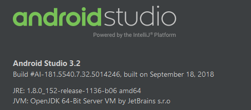
已经ROOT的红米Note
如果手机没有root，则需要事先准备好 该手机操作系统对应的系统签名文件，因为MyTest APP需要拥有系统权限，才能执行am instrument命令来运行uiautomator脚本。由于很多手机厂商会对android系统进行定制修改，所以使用原生的android系统证书platform.x509.pem和platform.pk8文件给APP添加系统签名是无效的。所以最终我选择了将手机ROOT。
方案概述
- 新建一个Android app工程MyTest，在Activity中添加Button，用于启动uiautomaotr脚本
- 给这个app添加系统签名。
若手机已root，则忽略此步。 - 在MyTest中新建一个module，命名为MyTestCase，用于编写uiautomaotr脚本
- 使用
am instrument命令实现脚本的运行，执行模拟点击
具体步骤：
1. 新建一个Android应用，命名为MyTest
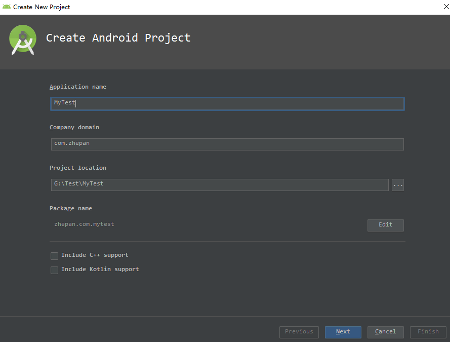
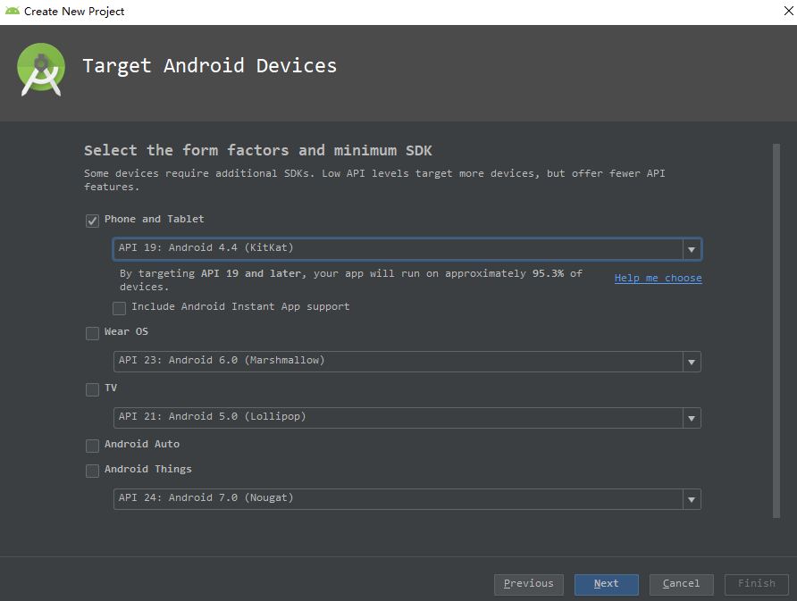
并选择Empty Activity，一路next到finish。
2. 给UI增加Button，修改res/layout目录下activity_main.xml文件
1 |
|
3. 修改MainActivity.java文件MainActivity Class，添加Button事件、uiautomator线程、创建CMDUtils类等
注意： generateCommand函数的三个入参分别是待会我们要创建的uiautomator脚本的包名、类名、方法名。1
2
3
4
5
6
7
8
9
10
11
12
13
14
15
16
17
18
19
20
21
22
23
24
25
26
27
28
29
30
31
32
33
34
35
36
37
38
39
40
41
42
43
44
45
46
47
48
49public class MainActivity extends AppCompatActivity {
private static final String TAG = "MainActivity";
Button runBtn;
protected void onCreate(Bundle savedInstanceState) {
super.onCreate(savedInstanceState);
setContentView(R.layout.activity_main);
runBtn= findViewById(R.id.runBtn);
}
/**
* 点击按钮对应的方法
* @param v
*/
public void runMyUiautomator(View v){
Log.i(TAG, "runMyUiautomator: ");
new UiautomatorThread().start();
Toast.makeText(this, "start run", Toast.LENGTH_SHORT).show();
}
/**
* 运行uiautomator是个费时的操作，不应该放在主线程，因此另起一个线程运行
*/
class UiautomatorThread extends Thread {
public void run() {
super.run();
String command = generateCommand("zhepan.com.mytestcase", "ExampleInstrumentedTest ", "useAppContext");
CMDUtils.CMD_Result rs= CMDUtils.runCMD(command,true,true);
Log.e(TAG, "run: " + rs.error + "-------" + rs.success);
}
/**
* 生成命令
* @param pkgName uiautomator包名
* @param clsName uiautomator类名
* @param mtdName uiautomator方法名
* @return
*/
public String generateCommand(String pkgName, String clsName, String mtdName) {
String command = "am instrument -w -r -e debug false -e class "
+ pkgName + "." + clsName + "#" + mtdName + " "
+ pkgName + ".test/android.support.test.runner.AndroidJUnitRunner";
Log.e("test1: ", command);
return command;
}
}
}
CMDUtils.java文件内容如下：
注意:
- 我没有采用给APP添加系统签名的方式来获取系统权限，而是在代码中使用
Runtime.getRuntime().exec("su");来获取root权限，但前提是你的手机已经root，且装有授权管理，允许应用来申请root权限。- 当执行
Runtime.getRuntime().exec("su");这行代码时，手机上会弹出一个对话框问你是否允许申请root，但只是执行这条命令有root权限而已，并不是整个程序都有root权限。这点需要特别注意。
1 | /** |
4. 新建一个Module，用于编写uiautomator脚本
单击项目名称，右击“New – Module – Phone&Table Module”，
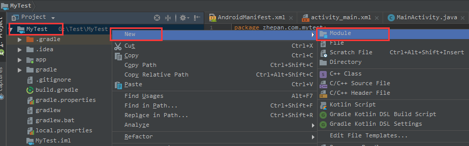
并填写如下信息，
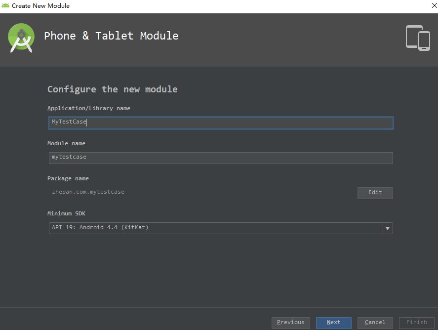
Next之后，选择 “Add No Activity” –> Finish。
5. 修改mytestcase模块的build.gradle文件
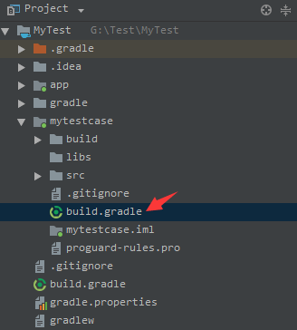
- 打开build.gradle文件，可以看到系统已经自动在defaultConfig中添加了Runner（
testInstrumentationRunner "android.support.test.runner.AndroidJUnitRunner"）。如系统未自动添加，请自行添加一下。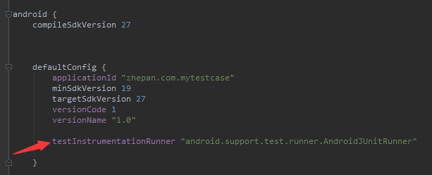
- 在dependencies中添加依赖
1
2
3
4
5
6
7
8
9dependencies {
implementation fileTree(dir: 'libs', include: ['*.jar'])
implementation 'com.android.support:appcompat-v7:27.1.1'
implementation 'junit:junit:4.12'
implementation 'com.android.support.test:runner:1.0.2'
implementation 'com.android.support.test.uiautomator:uiautomator-v18:2.1.3'
androidTestImplementation 'com.android.support.test.espresso:espresso-core:3.0.2'
}
6. 编写uiautomator脚本并运行（附加原理分析）
打开系统自行创建的测试类ExampleInstrumentedTest.java文件（在mytestcase\src\androidTest\java\zhepan\com\mytestcase目录下），或自己新建一个测试类。
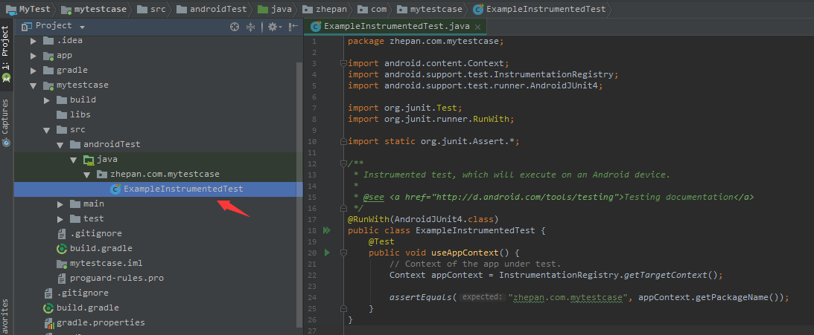
修改ExampleInstrumentedTest类如下：1
2
3
4
5
6
7
8
9
10
11
12
13
14
15
16/**
* Instrumented test, which will execute on an Android device.
*
* @see <a href="http://d.android.com/tools/testing">Testing documentation</a>
*/
(AndroidJUnit4.class)
public class ExampleInstrumentedTest {
private UiDevice mDevice;
public void useAppContext() throws UiObjectNotFoundException {
mDevice = UiDevice.getInstance(InstrumentationRegistry.getInstrumentation());
mDevice.pressHome();
UiObject x=mDevice.findObject(new UiSelector().text("联系人"));
x.click();
}
}Case说明：
@RunWith注解，代表使用什么Runner
@Test注解，表示当前的方法为测试方法注意： 还记得第3步MainActivity.java文件中的generateCommand函数吗？这个函数的
三个入参分别是 上面这个测试类的包名、类名和方法名，一定要记得对应上哈。运行一下你的case，测试是否有效。运行方法：点击带有Test注解的方法左侧绿色三角形
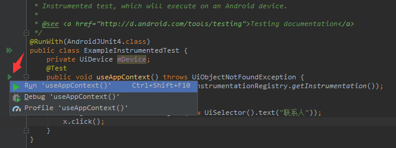
此时，控制台Run窗口会输出如下信息：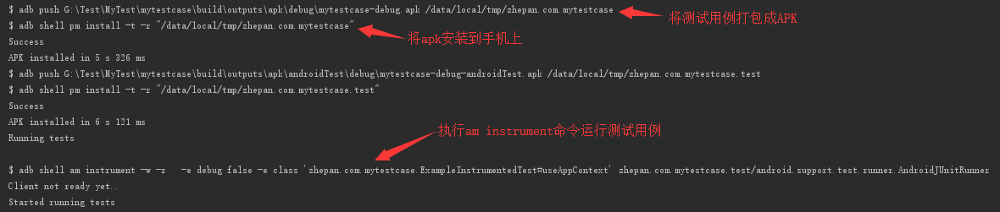
原理分析：可以看出，窗口其实执行了3条命令：
1
2>$ adb push G:\Test\MyTest\mytestcase\build\outputs\apk\debug\mytestcase-debug.apk /data/local/tmp/zhepan.com.mytestcase
>在我们点击运行之后，AS会自动将用例打包成apk文件。
1
2$ adb shell pm install -t -r "/data/local/tmp/zhepan.com.mytestcase"
将这个apk安装到手机上
1
2>$ adb shell am instrument -w -r -e debug false -e class 'zhepan.com.mytestcase.ExampleInstrumentedTest#useAppContext' zhepan.com.mytestcase.test/android.support.test.runner.AndroidJUnitRunner
>执行am命令，使用AndroidJunitRunner启动测试用例
通过分析这个过程，我们知道了AS是如何将用例跑起来的。仿照这个原理我们就可以自己实现通过apk调用uiautomator用例：只要让app中的button响应事件去执行am instrument命令即可，但是由于执行这个命令是需要系统权限的，因此需要给app添加系统签名，或跑在已经root的手机上。
7. 给APP添加系统签名（手机已 ROOT 的可跳过此步）
大致过程如下，具体的细节可以参照一位大神之前写过的文章Android Studio自动生成带系统签名的apk：
a. 修改MyTest APP中的manifest.xml文件，添加android:sharedUserId="android.uid.system"
b. 生成js文件
c. 使用keytool-importkeypair对jks文件引入系统签名
d. 配置gradle（app）
8. 通过MyTest APP启动uiautomator脚本，实现脱离PC运行
运行MyTest APP，由于第6步已运行过uiautomator脚本，mytestcase-debug.apk已安装到手机上，所以此处不必再次运行脚本。
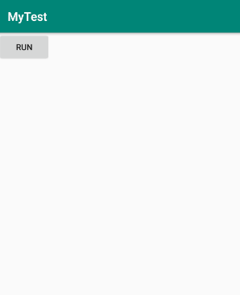
点击RUN，则回到主界面，并打开主界面上的联系人。至此，实现了uiautomator2.0脱离PC运行的效果。
最后附上项目源码地址：https://github.com/pgz100/myuiautomator